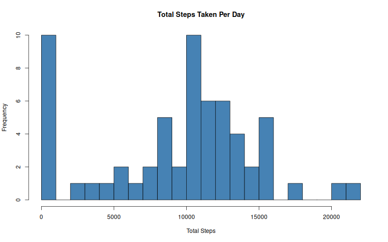
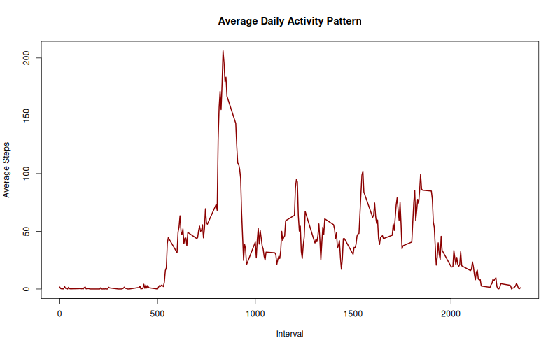
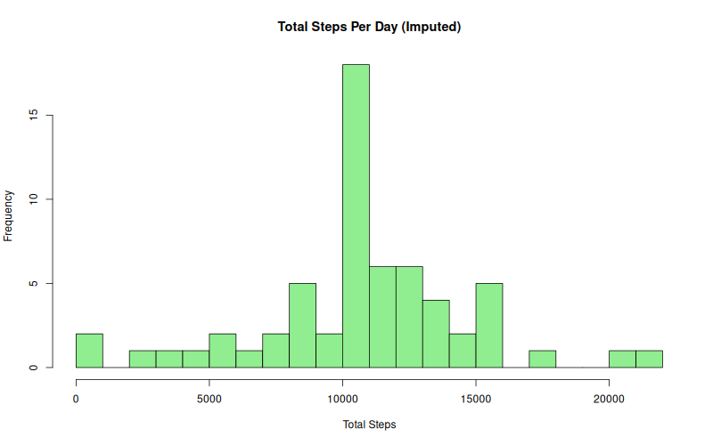
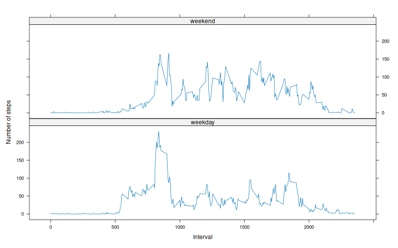

Data loaded successfully and dates converted to Date class.

The mean total number of steps taken per day is 9354.23 and the median is 10395.

The 5-minute interval that contains the maximum number of steps on average is 835.
The total number of missing values is 2304.

After imputing, the mean is 10766.19 and the median is 10766.19.
